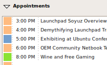
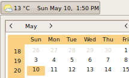
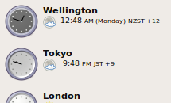

The clock in Ubuntu does more than tell the time.
It integrates seamlessly with Evolution Calendar to remind you of upcoming events or important tasks so you never miss an important meeting again.
For communicating across time zones, unfold the Locations section to find out exactly what time it is and even what the weather is like anywhere around the globe.


